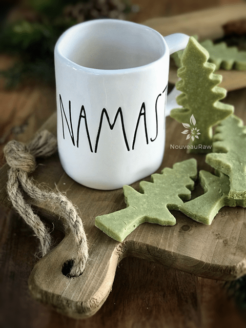
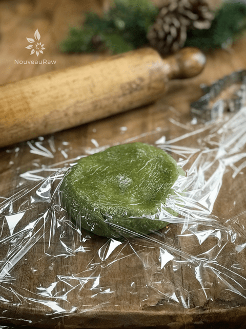
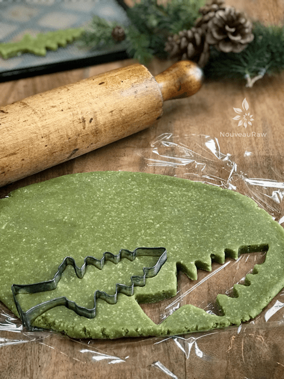
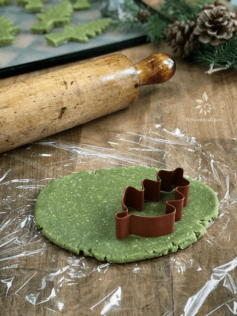
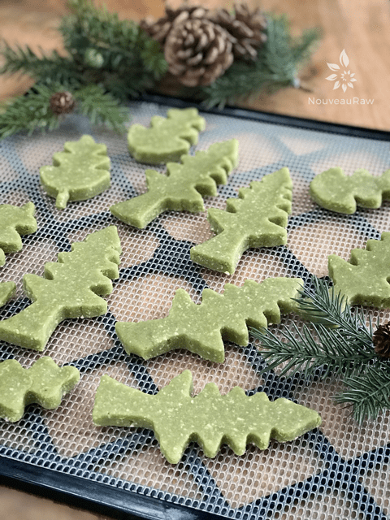

Matcha Green Tea Shortbread Cookies
~ raw, vegan, gluten-free ~
New To Matcha? One cup of matcha has the nutritional value of ten cups of brewed green tea.
What is Matcha Powdered Green Tea?
Matcha is a green tea powder from Japan used for drinking as tea or as I found it can be used in raw cookie recipes.
I looked at matcha for months, I would put it in my virtual shopping cart and then take it out. put one in… take it out… and so forth. It just confused me.
The price range was all over the board which made it even more confusing. If it was more expensive, did that mean that it was a better quality? After trying to buy it several times, I decided that it was time to really do some research.
Quality matcha should be BRIGHT green, almost electric green.
Bad matcha is a more dull green, sort of like an army green. The pale green color indicates that the matcha is possibly past its prime, or contains stems and branches that were ground into it. Matcha is a type of green tea but 10 times more concentrated than traditional steeped green tea in the tea bags, so tends to have a higher price.
Next, we move on to our sniffer. Does it smell fresh, almost like freshly blended green vegetables? Or does it smell like old hay? I am guessing that can tell from those descriptions what you should look for.

What does matcha taste like?
It is rich and creamy compared to more astringent green and especially black fermented teas. The chlorophyll and amino acids found in matcha give it its unique rich flavor, starting off with an astringent taste, followed by a lingering sweetness.
Matcha made in the traditional Japanese style whisked with water is a full-bodied green tea. Keep in mind that when added as an ingredient, the taste of matcha becomes subtle. It adds the flavor and color of green tea to your creation, be it a smoothie, raw cheesecake, or cookies.
I will be honest, I believe the taste of Matcha might just be one of those acquired tastes. If you like a little hit of “superfood green” taste, then I think you will enjoy this cookie. Be sure to start with a small amount of powdered tea. You can always increase the measurement but you can’t take it away.
I don’t know about you but I am always searching for ways we can increase our nutrient intake in the foods we make. Sure beats swallowing supplements! If you are new to Matcha, please, I encourage you to give it a try. I ordered mine from Amazon but have seen it in Whole Foods and health food stores.
What are the health benefits of matcha?
Matcha is rich in nutrients, antioxidants, fiber, and chlorophyll. It is said that the health benefits exceed those of other green teas because you are ingesting the whole leaf, not just the brewed water. One glass of matcha is the equivalent of 10 glasses of green tea in terms of nutritional value and antioxidant content. Be aware, it does contain a natural source of caffeine. So if you are sensitive to caffeine, use your best judgment on the intake.
Yields 24+ cookies
Preparation:
- If you make your own almond meal, be sure to remove the skins from the almonds if you want your cookie to be cream/white.
- I realize that the matcha will help to give the cookie the green color but having the skins blended in the cookie will leave dark flecks and oftentimes the skins can make it hard for the body to digest.
- In a food processor, fitted with the “S” blade, break down the almonds, cashews, and coconut into a flour – individually. The finer the better.
- Now combine the almond flour, cashew flour, coconut flour, salt, and matcha. Pulse together so all the dry ingredients get blended.
- Add the sweetener, vanilla bean seeds, and almond extract. Process until it starts sticking together and forms a ball.
- Spread a large piece of plastic wrap on the countertop.
- Place the dough in the center of the wrap. Then cover with another piece of plastic wrap.
- Roll the dough out to 1/4″ thickness.
- Make your cookie cutter shapes and transfer the cookie to the mesh sheet that comes with your dehydrator.
- Once you have made as many shapes as you can, gather up the dough scraps, make it into a ball shape, and start the process over so you can make more cookies. Do this process until you no longer can make a cookie-cutter shape.
- Dipping the cookie cutters in water in between use can help prevent sticking.
- I always have a small amount left. I shape it into a ball and flatten it, this becomes my taste tester at the end.
- Dry at 145 degrees (F) for 1 hour, then reduce to 115 degrees (F) for approximately 16 hours. Or until desired dryness is reached.
- They come out of the dehydrator looking just like they went in. :) No color and size change.
- Store in an airtight container on the counter or in the fridge.
- Be sure to layer them in single layers with wax paper in between so they don’t stick.
- These should last around 5-7 days or 1-3 months in the freezer. Be sure to seal in an airtight container either way.
Culinary Explanations:
- Why do I start the dehydrator at 145 degrees (F)? Click (here) to learn the reason behind this.
- When working with fresh ingredients it is important to taste test as you build a recipe. Learn why (here).
- Don’t own a dehydrator? Learn how to use your oven (here). I do however truly believe that it is a worthwhile investment. Click (here) to learn what I use.
-

-
Roll the dough out in between 2 pieces of plastic wrap.
-

-
Select your cookie cutters.
-

-
Dipping them in water in between use can prevent sticking.
-

-
Place the cookies on the mesh dehydrator sheet.
© AmieSue.com